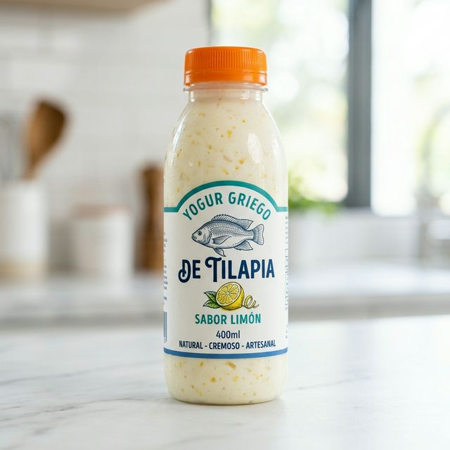
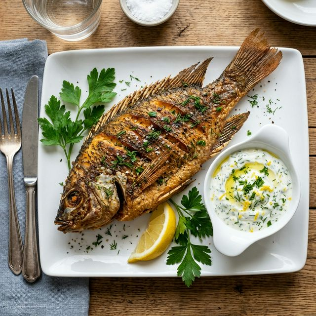
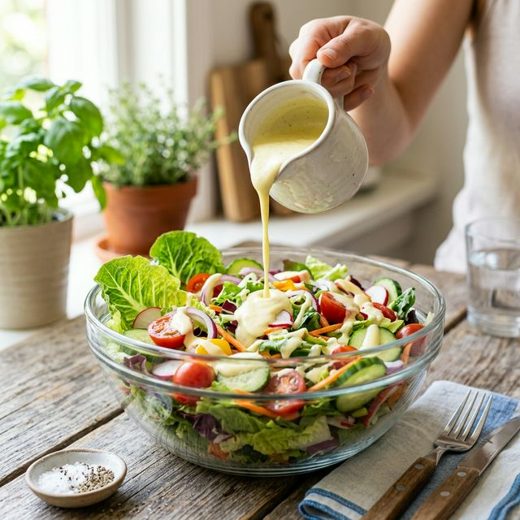

Yogur Griego de Tilapia
Sabor Limón – Crema fermentada artesanal rica en proteína.
- 🐟 Tilapia seleccionada
- 🍋 Toque natural de limón
- 🧬 Fermentación probiótica

¿Qué es este producto?
El Yogur Griego de Tilapia es una crema fermentada gourmet inspirada en la tradición y la innovación local. A través de un proceso artesanal controlado, transformamos tilapia seleccionada en una base proteica de alta calidad con una textura firme y suave, similar al yogur griego. Es un producto nutritivo, fresco y versátil, diseñado para ser el acompañante perfecto de tus platos favoritos.
Beneficios Principales
Alto en proteína
Aprovecha la proteína de alta calidad de la tilapia en cada bocado.
Textura tipo yogur
Consistencia firme, suave y cremosa, perfecta para untar o como salsa.
Sabor cítrico fresco
El toque de limón natural crea un perfil aromático limpio y refrescante.
Ideal para Semana Santa
El complemento perfecto para tus platos de pescado tradicionales.
Fermentación probiótica
Proceso natural que mejora la digestibilidad y aporta funcionalidad.
Producto artesanal
Hecho localmente con pasión y respeto por los recursos de nuestra región.
¿Cómo se usa?

Para acompañar pescado frito
Para patacón / yuca

Salsa para ensaladas
Sabor Limón: El Toque Perfecto
Nuestro sabor estrella no es casualidad. El limón ha sido el compañero histórico del pescado, aportando frescura y equilibrio. En nuestro yogur, el cítrico suave elimina cualquier rastro de pesadez, dejando un aroma limpio y un paladar vibrante que combina perfectamente con comida típica.
- ✅ Sabor fresco y natural
- ✅ Ácido suave y balanceado
- ✅ Aroma cítrico revitalizante
Lo que dicen quienes lo probaron
"Ideal para acompañar el pescado frito del domingo. ¡Me sorprendió la textura!"
"El sabor al limón es muy suave. Lo usamos como salsa para ensalada y quedó delicioso."
"Perfecto para Semana Santa. Una alternativa natural y muy nutritiva."
Galería de Frescura
Nuestra Historia
Nacimos en el corazón de nuestras cuencas hídricas, inspirados por el río y la riqueza de la tilapia. Somos un emprendimiento local que cree en el aprovechamiento inteligente de nuestros recursos para crear productos innovadores.
Nuestra misión es transformar la tradición en una experiencia gourmet saludable, artesanal y sostenible, conectando el campo con la mesa de cada familia colombiana.
Preguntas Frecuentes
Pide tu Yogur Griego de Tilapia hoy
No pierdas la oportunidad de probar la innovación gastronómica de nuestra región.
Contactar por WhatsApp